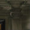
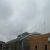
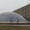
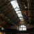
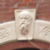
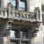
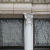

Exhibit 1
Ionic Columns
Of the three columns of classical architecture, Ionic columns have a notable `egg-and-dart` design near the cap. This feature makes them easy to identify.
This piece is located right at the doorway of the small apartment complex and faces Ellis avenue. The surrounding area has a number of old homes and apartments which also have unique characteristics about them.
5458 S Ellis Ave, Chicago, IL 60615

Exhibit 2
Cable Construction
5530 South Ellis, Chicago, Illinois 60637
Cables can be used to offer strong suspension. Designed by Cesar Pelli, the Gerald Ratner Athletics Center has a number of cables which are used for the support of its various features. They can be seen from all directions.
The Athletics Center is located right at the corner of Ellis and 55th street.

Exhibit 3
Dome Construction
1010 East 57th Street, Chicago, Illinois 60637
The Mansueto Library was commissioned by Joe and Rika Mansueto, and designed by Helmut Jahn. The smooth glass curves forming the domed ceiling directly contrast the brutalist architecture of it's neighbor, the Regenstein Library.
This Mansueto Library is located right at the corner of Ellis and 57th street.
Exhibit 4
Pointed Arch
1070 E. 57th Street, Chicago, Illinois 60637
Marking the entrance to the main quads is this notable vine covered Arch which hundreds of students pass through on their way to classes. It is quite monolithic and the simple details in the construction are often overlooked.
This can be found directly across from the Regenstein Library on 57th Street. You simply need to walk east a few yards from Mansueto to see the arch.

Exhibit 5
Trussed Roof Construction
5640 South University Avenue, Chicago, Illinois 60637
A trussed roof is a roof that consists of triangular units joined at specific nodes. Because of this design, most force is exerted at nodes leading to mostly tensile or compressive forces.
The Trussed Roof can be seen by going to the second floor and entering the main dining hall.

Exhibit 6
Keystone
5635 South University Avenue, Chicago, Illinois 60637
A keystone is a wedge-shaped block which is placed at the peak of an arch or vault. In addition to possibly being decorative, it provides structural support by adding pressure to lock stones in position.
There is a fairly nice keystone on the entry arch which faces University Avenue.

Exhibit 7
Corbel
1100 East 58th Street, Chicago, Illinois 60637
A corbel is a piece of masonry which sticks out from the side of a building in order to support additional weight.
There are large corbels outside of Ryerson and are used to support some exterior structures. You need to be viewing Ryerson from the main quad, and not the street side to see them. Their size makes them quite noticeable.

Exhibit 8
Corinthian Column
5728 S. Woodlawn Ave, Chicago, Illinois 60637
Of the three columns of classical architecture, Corinthian columns are the most ornate. They have elaborate flushes of acanthus leaves and scrolls.
There are Corinthian columns lining the window of the building and which face Woodlawn Ave.
{kind=link}
{kind=link}
{kind=link}
{kind=link}
{kind=link}
{kind=link}
{kind=link}
{kind=link}
{kind=link}
{kind=link}
{kind=link}
{kind=link}
{kind=link}
{kind=link}
{kind=link}
{kind=link}
{kind=link}
{kind=link}
{kind=link}
{kind=link}
{kind=link}
{kind=link}
{kind=link}
{kind=link}
{kind=link}
{kind=link}
{kind=link}